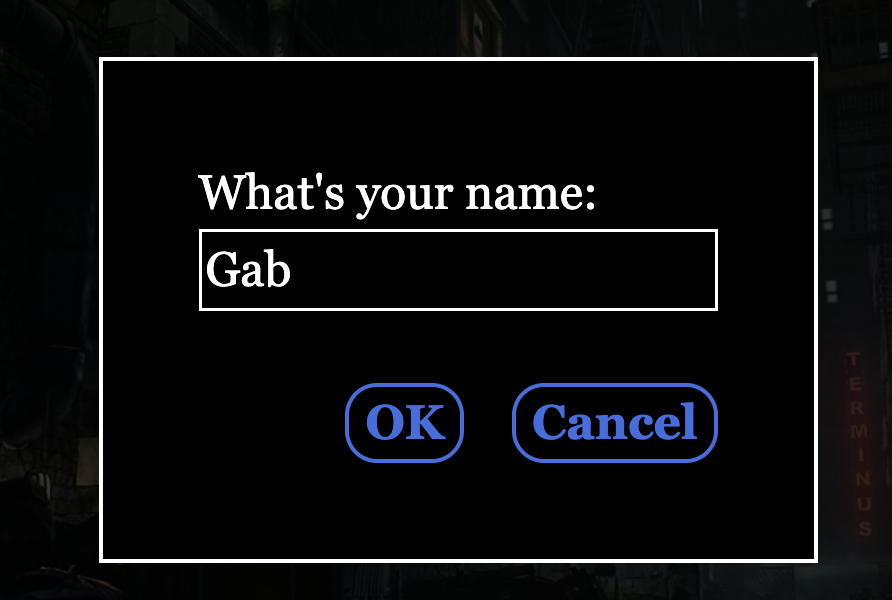

About Me
GabGar

I’m a first-generation art student from the East Bay of California with an AA in Graphic Design, currently working towards multiple degrees. I enjoy building meaningful, genuine, and lasting connections, as well as gaining creative inspiration and insights of contemporary life.
Digital Composite
Brat Charli XCX poster, Aug 2024

This concert poster collage was inspired by Charli XCX's Brat Tour. I aimed to keep the design on theme with a simple color palette that reflects the tour’s aesthetic. Although it's a mockup, I hope viewers enjoy the traditional concert-poster layout, and fans appreciate it as if it were real. I chose to focus on Charli XCX because of the anticipation and trends surrounding her upcoming tour on social media. I created the collage using Adobe Photoshop and designed the layout and text with Adobe Illustrator. My goal was to design a tour poster that a fan could buy at the merch stands during or after the show.
Glitch Art
Pt. 1, Sept 2024

For this glitch art, titled Part 1 (pt.1), I focused on using vibrant images with strong hues of pink and purple. I found that colorful images, especially those with bold hues, allowed for more dynamic and unpredictable results when manipulated through Audacity and a text editor. I also chose this image because it's one of my favorites, and the glitch effect is somewhat reminiscent of the style seen in Spider-Man: Into the Spider-Verse.
Pt. 2, Sept 2024

For Part 2, I mostly relied on Audacity to produce this particular glitch effect. Once again, I chose a web image with vibrant colors and hues. My goal was to glitch specific parts of the image, making it more abstract and unrecognizable.
Twine Narrative
Read the story here with this link!
This was my first attempt at writing an interactive narrative with different alternative pathways and/or story endings for viewers to engage with. I enjoyed learning how to use Twine, the open-source storyboarding application. Though I kept the CSS style of the game simple, most of my attention was focused on developing an intriguing storyline.